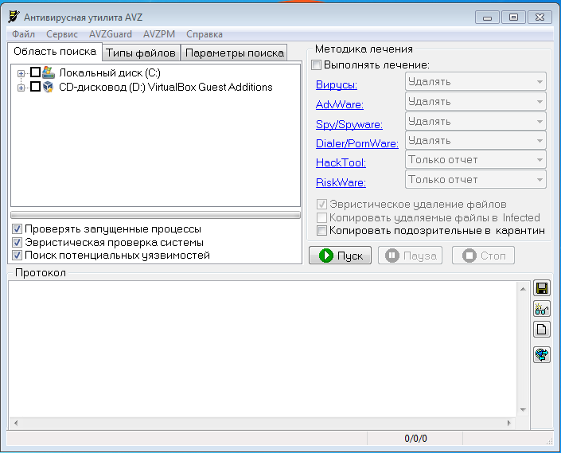
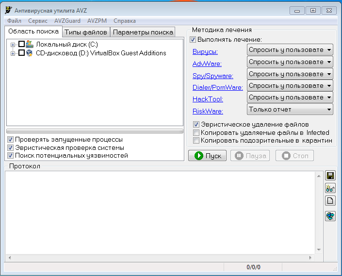

AVZ — бесплатный антивирусный сканер, используемый для быстрого обнаружения и удаления вирусов и шпионских программ.
Рис. 1. Главное окно программы
Рис. 2. Выбор методики лечения
В пункте выбора методики лечения есть довольно интересный режим удаления файлов – эвристический. Данный метод “разумно” удаляет вредоносные файлы. После удаления файла производится анализ системы и удаляет все оставшиеся файлы, которые ссылаются на удаленный файл. В результате данное удаление является наиболее корректным.
Рис. 3. Выбор действия с вредоносными файлами
Рис. 4. Процесс сканирования системы
В ходе проверки компьютера программа “ругалась” на программу HomeGuard Activity Monitor, так как в программе присутствует функция keylogger’а, но в результате подозрений не было обнаружено. Про функции программы HomeGuard Activity Monitor можно узнать здесь.
Рис. 5. Завершение сканирования
В результате проведения сканирования угроз обнаружено не было.
Рис. 6. Параметры поиска вредоносного программного обеспечения
На рисунке №6 представлена возможность настройки параметров поиска.
Рис. 7. Выбор проверки файлов
Можно выбирать какие файлы будут проверяться программой.
Рис. 8. Список запущенных процессов
На картинке выше отображается список запущенных процессов. В нашем случае программа “ругается” на один процесс, программу HomeGuard Activity Monitor.
Рис. 9. Порты TCP
Также можно просмотреть все порты UDP/TCP.
Данная утилита может быть полезной для кого-то, учитывая то, что продукт полностью бесплатный. С нахождением вирусов и шпионских элементов программа справляется. И если вы беспокоитесь за то, что ваш компьютер может подвергнуться шпионской атакой, то можете смело использоваться AVZ для предотвращения атак.